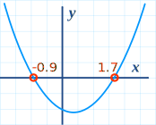
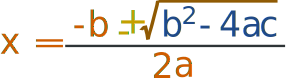
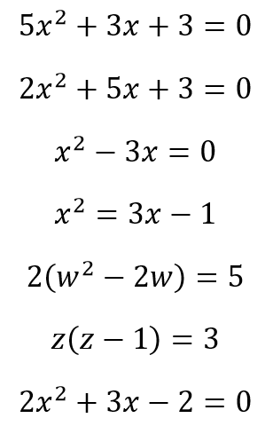

Entre números y aventuras
Las matemáticas son una herramienta muy importante para la vida, pues son la clave del éxito en todos los campos y nos rodean por todas partes. Es por ellos que, las matemáticas son fundamentales para el desarrollo intelectual de los niños, niñas y adolescentes.
Reto matemático semanal:
Antes de la clase, deben tomarse unos minutos para responder el siguiente reto: El tiempo
¿Tienes idea de cuánto es un millón de segundos?
De las siguientes soluciones que se dan a continuación, ¿Cuál crees que se aproxima más a la verdadera?
- Medio año
- Once días y medio
- Veintitrés horas
Tema 2: Ecuaciones de Segundo Grado
Las ecuaciones de segundo grado son como una puerta de entrada a un vasto paisaje de descubrimientos. ¿Qué son exactamente? Bueno, son ecuaciones que involucran términos al cuadrado, tales como x2, y nos desafían a encontrar el valor o los valores de x que hacen que la ecuación sea verdadera.
Un ejemplo de una Ecuación de Segundo grado:
Forma Estándar
La Forma Estándar de las ecuaciones de Segundo Grado es la siguiente:
- a, b y c son valores conocidos. a no puede ser cero 0
- x es la variable o valor desconocido.
Algunos ejemplos de ecuaciones:
| 2x2 + 5x + 3 = 0 | En este caso a=2, b=5 y c=3 | |
| x2 − 3x = 0 | Este es un poquito más complicado:
|
|
| 5x − 3 = 0 | Oops! Esta no es una ecuación de segundoi grado: ya que no se encuentra el término x2 |
Ecuaciones de 2do grado desordenadas:
Como se mostró anteriormente, la Forma Estándar de una Ecuación de Segundo Grado es:
Pero aveces las ecuaciones de segundo grado no se ven directamente de esa forma y queda como tarea nuestra el tener que ordenar la ecuación.
Por ejemplo:
| Ecuación desordenada | Forma Estándar | a, b y c | |
|---|---|---|---|
| x2 = 3x − 1 | Movemos todos los términos al lado izquierdo | x2 − 3x + 1 = 0 | a=1, b=−3, c=1 |
| 2(w2 − 2w) = 5 | Expandemos y movemos el 5 al lado izquierdo |
2w2 − 4w − 5 = 0 | a=2, b=−4, c=−5 |
| z(z−1) = 3 | Expandemos y movemos el 3 al lado izquierdo | z2 − z − 3 = 0 | a=1, b=−1, c=−3 |
¿Cómo resolverlas las ecuaciones de Segundo Grado?
Las "soluciones" de las ecuaciones de Segundo Grado son los valores de x que hacen que la ecuación sea igual a cero.
A estás soluciones también se les llama "raícess", o aveces "ceros"

Por lo general se tendrán 2 soluciones (como se muestra en la gráfica).
Y existen diferentes maneras de determinar esas soluciones:

En donde simplemente se ingresan los valores de a, b y c, y se realizan los calculos.
Nosotros veremos este último método más en detalle.
Acerca de la Fórmula
Más o menos
En primer lugar, ¿qué es ese signo más/menos que parece ± ?
El ± significa que podemos obtener DOS respuestas:
x1 = −b + √(b2 − 4ac) /2a
x2 = −b − √(b2 − 4ac) /2a
Pero no siempre tendremos dos respuestas,
Y allí es donde el "Discriminante" nos ayuda ...
Discriminante
¿Ves el b2 − 4ac en la fórmula anterior? Se le llama Discriminante, ya que puede "discriminar" entre las posibles tipos de respuestas:
- Cuando b2 − 4ac es positivo, obtendremos 2 soluciones Reales
- Cuando es cero, obtendremos solo UNA solución Real (ya que a,bas respuestas serán lo mismo)
- Cuando es negativo, obtendremos un par de soluciones Complejas
¿Soluciones complejas? Bueno ese es un tema que no abordaremos en la materia.
Uso de la fórmula cuadrática
Solo hay que colocar los valores de a, b y c en la Fórmula, y realizar los cálculos.
Ejemplo: Resolver 5x2 + 6x + 1 = 0
x = −6 ± √(62 − 4×5×1) /2×5
x = −6 ± √(36− 20) /10
Respuesta: x = −0.2 y x = −1
Comprobemos las respuestas:
= 5×(0.04) + 6×(−0.2) + 1
= 0.2 − 1.2 + 1
= 0
= 5×(1) + 6×(−1) + 1
= 5 − 6 + 1
= 0
¿Soluciones complejas?
Cuando el Discriminante (el valor b2 − 4ac) es negativo, obtendremos dos soluciones Complejas ... ¿y qué significa esto?
Esto implica que las soluciones tendrán números imaginarios. Pero como se mencionó anteriormente, ese tema no nos corresponde abordarlo en este grado.
Resumen
- La forma estándar de las ecuaciones de segundo grado es: ax2 + bx + c = 0
- Las ecuaciones de segundo grado pueden factorizarse.
- La Fórmula Cuadrática es:
- Cuando el Discriminante es (b2−4ac) es:
- positivo, existen 2 soluciones reales.
- cero, existe una solución real.
- negativo, existen 2 soluciones complejas.
Vídeos del profesor
Ejercicio 1:
Ejercicio 2:
Ejercicio 3:
Ejercicio 4:
Ejercicio Propuestos
Hallar las soluciones de las siguientes Ecuaciones de Segundo Grado:
